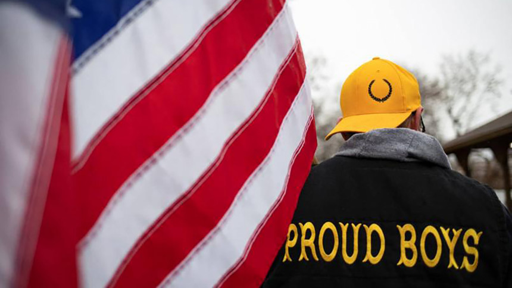

The Daily Star
Friday, july 1,2022 | Journalism Without Fear or Favour
World
New Zealand declares US far-right group
Proud Boys "terrorist organization"
AP, Wellington, New Zealand
Fri Jul 1, 2022 02:17 PM Last update on: Fri Jul 1, 2022 02:19 PM

Reuters file photo
New Zealand's government has declared that American far-right groups the Proud Boys and The Base are terrorist organizations.
The two groups join 18 others including the Islamic State group that have been given an official
terrorist designation, making it illegal in New Zealand to fund,
recruit or participate in the groups, and obligating authorities to take action against them.
For all latest news, follow The Daily Star's Google News channel.
The U.S. groups are not known to be active in New Zealand, although the South Pacific nation has
become more attuned to threats from the far right after a white supremacist shot and killed
51 Muslim worshippers at two Christchurch mosques in 2019.
The New Zealand massacre inspired other white supremacists around the world, including a white
gunman who killed 10 Black people at a supermarket in Buffalo, New York, in May.